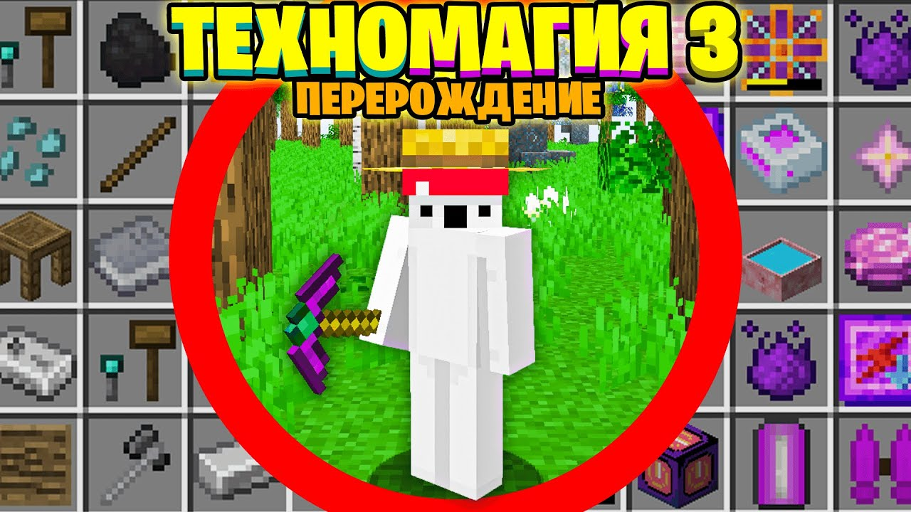

Ivanchela
Ivanchela - настоящие имя Иван Корецкий. первый ролик выложил ещё в 2013 году, однако первые 100 000 постоянных зрителей появились на канале в январе 2020 года. Потом все пошло как по маслу.И наконец, в декабре 2022 года — один миллион подписчиков на канале Ivanchela
Один Блок ТРИЛЛИАРД МОДОВ 1.16.5
.jpg)
Помните карту один блок? Это её модифицированная версия. Теперь вам будут попадаться не только стандартные майнкрафт блоки, но и из модов.На сборке много как технических так и магических модов которые всегда могут чем то занять
СкачатьТехноМагия 1.7.10
.jpg)
Сборка направленная на изучение технических и магических модов. Является первой сборкой среди серии сборок ТехноМагия.По сборке вышло 60 серий
СкачатьТехноМагия 2 1.12.2
.jpg)
Сборка опять же направленная на изучение технических и магических модов. Улучшает прошлую сборку и добовляет множевство новых модов. так же с помощью кастомных крафтов связывает моды из разных направлений так, чтобы пришлось заниматься всеми модами сразу. Является второй в серии сборок иванчелы ТехноМагия
СкачатьТехноМагия 3
Сборка, которая содержит в себе и магичемские, и технические моды. На данный момент последняя сборка серии. Добовляет в Майнкрафт множевство кастомных крафтов и новых модов дополняющих предыдущие версии Сборок. Третья по счёту в серии
Скачать